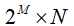
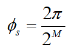
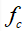
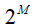
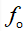
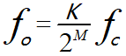
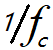
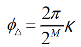
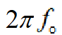
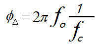

DDS の原理
DDS（直接周波数合成）技術は、ナイキストの標本化定理とデジタル処理技術に基づき、一連のアナログ信号を歪みなくサンプリングし、得られたデジタル信号をメモリに格納し、クロック制御下でデジタル・アナログ変換を通じて、デジタル量をアナログ信号に変換する方法です。
DDS モジュールは、主に位相アキュムレータ、ルックアップテーブル、DACコンバータ、ローパスフィルタから構成され、基本構造は以下のとおりです。

位相アキュムレータは、DDS の中核となる構成要素であり、位相の累積を実現し、対応する振幅値を出力します。位相アキュムレータは、Mビット幅加算器とMビット幅レジスタで構成され、クロック制御により、前回の累積結果を加算器の入力端にフィードバックして累積機能を実現し、各クロックサイクルにおける位相増分をK、そして位相累積結果をアドレスとしてROMルックアップテーブル部分に出力します。
振幅ルックアップテーブルは、各位相に対応するバイナリデジタル振幅値を格納します。各クロックサイクルにおいて、ルックアップテーブルは位相アキュムレータが出力する位相アドレス情報をアドレッシングし、対応するバイナリ振幅デジタル離散値を出力します。ルックアップテーブルのアドレスがMビット、出力データがNビットの場合、ルックアップテーブルの容量サイズは

。容易にわかるように、出力信号の位相分解能は次のとおりです。
DACコンバータは、デジタル信号をアナログ信号に変換します。実際には、DAC の出力信号は連続的ではなく、各ビットのコードの重みに応じて、入力された各ビットのデジタル量を加算し、その分解能を単位としてアナログ出力を行います。実際に出力される信号は階段状のアナログ信号であるため、平滑化処理を行う必要があり、通常はフィルタを使用してろ波します。
ローパスフィルタは、DACコンバータが出力するアナログ信号に階段状の欠陥があるため、平滑化処理を行い、大部分のスプリアス信号を除去して、出力信号をより理想的なアナログ信号にします。
DDS が動作するとき、周波数制御ワードKとMビット幅の位相アキュムレータに加算され、得られた結果が位相値となります。各クロックサイクルにおいて、バイナリ形式でROMルックアップテーブルに送られ、位相情報をデジタル化された正弦波振幅値に変換し、さらにデジタル・アナログ変換によって階段状のアナログ信号に変換します。信号がシステムフィルタを通過して大部分のスプリアス信号が除去されると、比較的純粋な正弦波を得ることができます。
周波数の分解の観点から言うと、ROMルックアップテーブルは入力周波数を

分解して
複数の部分に分け、出力周波数は
が占める部分の数は、まさにステップ周波数制御ワードです。K。したがって、DDS出力周波数は次のように表せます。
位相の観点から言うと、時間

内に周波数制御ワードによってK制御される出力位相の増分は次のとおりです。
このときの出力周波数の角速度を考慮すると、

時間 内の出力周波数の位相増分は、次のようにも表せます。
内の出力周波数の位相増分は、次のようにも表せます。

上記の2つの式から、DDS出力周波数と入力周波数の関係も導出できます。
DDS 設計
設計説明
以下では、DACより前のDDS回路のみを設計します。
設計するDDSの特徴は以下のとおりです。
- 周波数制御可能；
- 初期位相制御可能；
- 振幅制御可能；
- 4) 正弦波、三角波、方形波を選択して出力可能；
- 5) リソース最適化：波形記憶ファイルには4分の1周期分の正弦波データのみを採用。
ROM の生成
ROMモジュールは、カスタムIPコアを使用するのが最適で、タイミングと面積の両方でより良い最適化が可能です。カスタムROMではデータファイルも指定する必要があります。例えば、ISEのROMデータファイルの拡張子は.coe、Quartus II のROMデータファイルの拡張子は.mif。
シミュレーションを容易にするため、ここではコードでROMモジュールを記述します。アドレス幅は8ビット、データ幅は10ビットです。
スペースを節約するため、4分の1周期の正弦波形のみを格納し、対称性に基づいてシフトすることで、完全な1周期の正弦波データ波形を得ることができます。
DDSのモードを多様化するために、三角波と方形波のROMプログラムも追加されています。
実装コードは以下のとおりです（すべてファイル mem.v に含まれています）。
例
input clk, //reference clock
input rstn , //resetn, low effective
input en , //start to generating waves
input [1:0] sel , //waves selection
input [7:0] addr ,
output dout_en ,
output [9:0] dout); //data out, 10bit width
//data out fROM ROMs
wire [9:0] q_tri ;
wire [9:0] q_square ;
wire [9:0] q_cos ;
//ROM addr
reg [1:0] en_r ;
always @(posedge clk or negedge rstn) begin
if (!rstn) begin
en_r <= 2'b0 ;
end
else begin
en_r <= {en_r[0], en} ; //delay one cycle for en
end
end
assign dout = en_r[1] ? (q_tri | q_square | q_cos) : 10'b0 ;
assign dout_en = en_r[1] ;
//ROM instiation
cos_ROM u_cos_ROM (
.clk (clk),
.en (en_r[0] & (sel == 2'b0)), //sel = 0, cos wave
.addr (addr[7:0]),
.q (q_cos[9:0]));
square_ROM u_square_ROM (
.clk (clk),
.en (en_r[0] & sel == 2'b01), //sel = 1, square wave
.addr (addr[7:0]),
.q (q_square[9:0]));
tri_ROM u_tri_ROM (
.clk (clk),
.en (en_r[0] & sel == 2'b10), //sel = 2, triangle wave
.addr (addr[7:0]),
.q (q_tri[9:0]));
endmodule
//square waves ROM
module square_ROM (
input clk,
input en,
input [7:0] addr,
output reg [9:0] q);
//1 in first half cycle, and 0 in second half cycle
always @(posedge clk) begin
if (en) begin
q <= { 10{(addr < 128)} };
end
else begin
q <= 'b0 ;
end
end
endmodule
//triangle waves ROM
module tri_ROM (
input clk,
input en,
input [7:0] addr,
output reg [9:0] q);
//rising edge, addr -> 0x0, 0x3f
always @(posedge clk) begin
if (en) begin
if (addr < 128) begin
q <= {addr[6:0], 3'b0}; //rising edge
end
else begin //falling edge
q <= 10'h3ff - {addr[6:0], 3'b0} ;
end
end
else begin
q <= 'b0 ;
end
end
endmodule
//Better use mem ip.
//This format is easy for simulation
module cos_ROM (
input clk,
input en,
input [7:0] addr,
output reg [9:0] q);
wire [8:0] ROM_t [0 : 64] ;
//as the symmetry of cos function, just store 1/4 data of one cycle
assign ROM_t[0:64] = {
511, 510, 510, 509, 508, 507, 505, 503,
501, 498, 495, 492, 488, 485, 481, 476,
472, 467, 461, 456, 450, 444, 438, 431,
424, 417, 410, 402, 395, 386, 378, 370,
361, 352, 343, 333, 324, 314, 304, 294,
283, 273, 262, 251, 240, 229, 218, 207,
195, 183, 172, 160, 148, 136, 124, 111,
99 , 87 , 74 , 62 , 50 , 37 , 25 , 12 ,
0 } ;
always @(posedge clk) begin
if (en) begin
if (addr[7:6] == 2'b00 ) begin //quadrant 1, addr[0, 63]
q <= ROM_t[addr[5:0]] + 10'd512 ; // 上にシフト
end
else if (addr[7:6] == 2'b01 ) begin //2nd, addr[64, 127]
q <= 10'd512 - ROM_t[64-addr[5:0]] ; // 2回反転
end
else if (addr[7:6] == 2'b10 ) begin //3rd, addr[128, 192]
q <= 10'd512 - ROM_t[addr[5:0]]; // 反転して右にシフト
end
else begin //4th quadrant, addr [193, 256]
q <= 10'd512 + ROM_t[64-addr[5:0]]; // 反転して上にシフト
end
end
else begin
q <= 'b0 ;
end
end
endmodule
DDS 制御モジュール
例
input clk, //reference clock
input rstn , //resetn, low effective
input wave_en , //start to generating waves
input [1:0] wave_sel , //waves selection
input [1:0] wave_amp , //waves amplitude control
input [7:0] phase_init, //initial phase
input [7:0] f_word , //frequency control word
output [9:0] dout, //data out, 10bit width
output dout_en);
//phase acculator
reg [7:0] phase_acc_r ;
always @(posedge clk or negedge rstn) begin
if (!rstn) begin
phase_acc_r <= 'b0 ;
end
else if (wave_en) begin
phase_acc_r <= phase_acc_r + f_word ;
end
else begin
phase_acc_r <= 'b0 ;
end
end
//ROM addr
reg [7:0] mem_addr_r ;
always @(posedge clk or negedge rstn) begin
if (!rstn) begin
mem_addr_r <= 'b0 ;
end
else if (wave_en) begin
mem_addr_r <= phase_acc_r + phase_init ;
end
else begin
mem_addr_r <= 'b0 ;
end
end
//ROM instiation
wire [9:0] dout_temp ;
mem u_mem_wave(
.clk (clk), //reference clock
.rstn (rstn), //resetn, low effective
.en (wave_en), //start to generating waves
.sel (wave_sel[1:0]), //waves selection
.addr (mem_addr_r[7:0]),
.dout_en (dout_en),
.dout (dout_temp[9:0])); //data out, 10bit width
//amplitude
//0 -> dout/1 //1 -> dout/2 //2 -> dout/4 //3 -> dout/8
assign dout = dout_temp >> wave_amp ;
endmodule
testbench
例
module test ;
reg clk ;
reg rstn ;
reg wave_en ;
reg [1:0] wave_sel ;
reg [1:0] wave_amp ;
reg [7:0] phase_init ;
reg [7:0] f_word ;
wire [9:0] dout ;
wire dout_en ;
//(1)clk, reset and other constant regs
initial begin
clk = 1'b0 ;
rstn = 1'b0 ;
#100 ;
rstn = 1'b1 ;
#10 ;
forever begin
#5 ; clk = ~clk ; //system clock, 100MHz
end
end
//(2)signal setup ;
parameter clk_freq = 100000000 ; //100MHz
integer freq_dst = 2000000 ; //2MHz
integer phase_coe = 2; //1/4 cycle, that is pi/2
initial begin
wave_en = 1'b0 ;
//(a)cos wave, pi/2 phase
wave_amp = 2'd1 ;
wave_sel = 2'd0 ;
phase_init = 256/phase_coe ; //pi/8 initialing-phase
f_word = (1<<8) * freq_dst / clk_freq; //get the frequency control word
#500 ;
@ (negedge clk) ;
wave_en = 1'b1 ; //start generating waves
# 2000 ;
//(b)triangle wave, pi/4 initialing-phase
wave_en = 1'b0 ;
wave_sel = 2'd2 ;
phase_init = 256/4 ;
wave_amp = 2'd2 ;
# 50 ;
wave_en = 1'b1 ;
end
//(3) module instantiaion
dds u_dds(
.clk (clk),
.rstn (rstn),
.wave_en (wave_en),
.wave_sel (wave_sel[1:0]),
.wave_amp (wave_amp[1:0]),
.phase_init (phase_init[7:0]),
.f_word (f_word[7:0]),
.dout (dout[9:0]),
.dout_en (dout_en));
//(4) finish the simulation
always begin
#100;
if ($time >= 100000) $finish ;
end
endmodule
シミュレーション結果
次の図のように、出力信号をアナログ表示に調整します。
- 1) 正弦波の周波数は2MHzであり、周波数制御ワードに対応していることがわかります；
- 2) 正弦波の初期位相は1/2周期、三角波の初期位相は1/4周期で、設定と一致しています；
- 3) 三角波は正弦波の半分の値に設定されており、振幅も制御可能です；
- 4) 出力波形は正弦波と三角波で、正常に切り替えられます
- 5) 正弦波波形に異常はなく、1/4周期の正弦波データだけで完全な正弦波の出力が実現されています。
紙面の都合上、シミュレーションでは一部の特性のみをテストしています。読者はパラメータを変更して、他の周波数や方形波の出力など、他の特性もテストできます。

付録：MATLAB の使用
1/4 周期正弦波データの生成
MATLAB を使用して1/4周期正弦波データを生成する方法は以下のとおりです。また、完全な正弦波を連結する過程もシミュレーションしました。
例
%=======================================================
% generating 1/4 cos wave data with txt hex format
%=======================================================
N = 64 ; %共256個のデータを取得し、1/4
n = 0:N ;
w = n/N *pi/2 ; %πに量子化/2内
st = (2^10 /2 -1)*cos(w) ; %正弦波データは10ビットで取得
st = floor(st) ;
%%第1象限の連結
st1 = st+512 ;
figure(5) ;plot(n, st1) ;
hold on ;
%%第2象限の連結
n2 = 64 + n ;
st2 = 512 - st(64-n+1);
plot(n2, st2);
hold on
%%第3象限の連結
n3 = 128 + n ;
st3 = 512 - st ;
plot(n3, st3) ;
hold on ;
%%第4象限の連結
n4 = 192 + n ;
st4 = 512 + st(64-n+1) ;
plot(n4, st4) ;
hold on ;